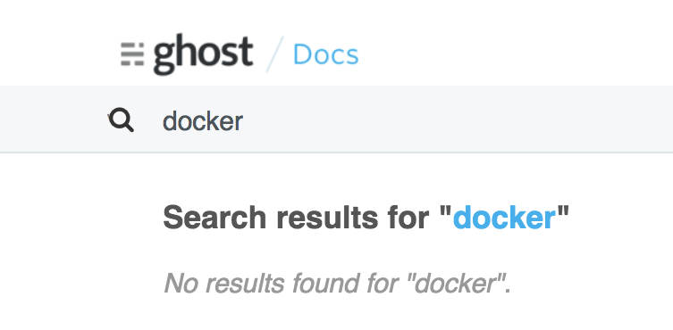
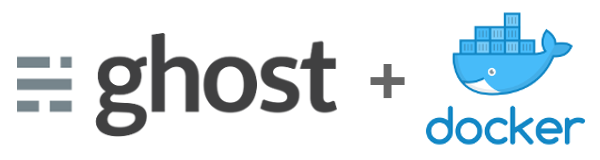

In this blogpost we'll see how to Dockerize a local Ghost app for fun and profit.
In a rush? Already familiar with Ghost? Jump to the technical bits.
Posting, again
It's been a *looong* time since my last post. The time has come to break the silence and start posting again. And what best way to make a comeback than with a blog post about blog posting? That's meta.

From Wordpress to Ghost
Last time I blogged I was using an hosted version of Wordpress on Blogetery.com (Blogetery is no more, nothing to link here) and prior to that on Wordpress.com itself. It worked pretty well but I was nurturing the idea of ditching all that HTML markup and writting in Markdown instead, and at the same time being able to use the new blog platform as a static site generator.
After some research, in a competiton that included the likes of Jekyll and Octopress I decided to settle on Ghost.
And here I am.
I know, Ghost isn't a static site generator, but it has a Santa's little helper. More on that later.
“Ghost: Just a Blogging Platform”
Ghost was founded in April 2013, backed by a successful Kickstarter campaign, advertised as a open source blogging platform which makes writing pleasurable and publishing simple and with a Markdown-based editing environment. Looked great and under active development. Promising.

Instead of the hosted version I've decided to install Ghost on my laptop and hack away. Moved my posts from the Wordpress installation and converted them to Markdown. A "few" npm packages later I had Ghost running on my machine with my content. Happy days.
From 0.x to 1.0
I ported my Wordpress posts initially to a Ghost 0.x version and that's what powered https://noiselabs.io since the beggining. Dependencies were directly installed on my OS. Life was simple.
Or was it?
Several months later I noticed the launch of Ghost 1.0 and decided to upgrade.
Nope. Upgrade b0rked. The 0.1 to 1.0 migration proved to be quite a frustrating task, read impossible, with conflicting Node versions and whatnot. But hey, it's 2017, we don't let software such as Node roam free anymore. We contain it, right? Bad pun, sorry.
Anyway, Docker to the rescue.
Dockerising the Ghost instalation
Went back to the Ghost instalation guide and searched for Docker. Weirdly Docker is not mentioned in the installation docs even though a Docker image for Ghost does exist. The guide seemed to be entirely focused on a bare-metal setup.

Fear not. Inspired by the local/dev and production guides I set myself to Dockerize the Ghost setup.
Enter Ghost-Base
Ghost-Base: A Dockerized environment ready for developing and deploying Ghost applications.
The setup that I eventually settled on is now published on GitHub at
https://github.com/noiselabs/ghost-base and it's meant to be used as a base layout for you Ghost setup. It includes docker-compose files for development and production setups, with the ability to launch a Ghost app using the latest available version and with a MySQL database and a Nginx reverse proxy.

The workflow will be roughly:
- Fine tune your theme using the dev environment
- Write posts in your prod environment
- (optional) Generate and preview static content using Buster
Configuration
Start by copying the example config provided in the ./config/.dist folder to ./config/. Four files are provided:
config/.dist
├── config.development.json
├── config.production.json
├── development.env
└── production.env
You'll need to edit config/development.env and config/production.env and fill the missing values for the database user and password.
ghost-base $ cp config/.dist/* config/
ghost-base $ vim config/development.env
MYSQL_DATABASE=ghost_dev
MYSQL_USER=
MYSQL_PASSWORD=
MYSQL_ROOT_PASSWORD=
NODE_ENV=development
NPM_CONFIG_LOGLEVEL=debug
ghost-base $ vim config/production.env
MYSQL_DATABASE=ghost_prod
MYSQL_USER=
MYSQL_PASSWORD=
MYSQL_ROOT_PASSWORD=
NODE_ENV=production
NPM_CONFIG_LOGLEVEL=info
Ghost Database(s)
For both the development and production environments described below Docker Volumes are used to persist the Ghost database.
More specifically the following setup is used:
# docker-compose.override.yml:
services:
db_dev:
image: mysql:8
env_file: config/development.env
volumes:
- ghost-db-dev-data:/var/lib/mysql:delegated
volumes:
ghost-db-dev-data:
# docker-compose.production.yml:
services:
db_prod:
image: mysql:8
env_file: config/production.env
volumes:
- ghost-db-prod-data:/var/lib/mysql:delegated
volumes:
ghost-db-prod-data:
If you don't mind using the same database instance for dev and prod environments then you can simplify the setup above by just using a simple volume, called ghost-db-data for example. You will end up with:
# docker-compose.yml:
service:
db:
image: mysql:8
env_file: config/development.env
volumes:
- ghost-db-data:/var/lib/mysql:delegated
volumes:
ghost-db-data:
This is the setup that I personally use as I don't need to separate the data between my dev and prod environments. YMMV.
On that note, please be aware that stopping your blog with docker-compose down -v or by running a cleanup task such as docker system prune when your blog is stopped will result in the Docker Volumes above being removed. Make sure you backup using the export functionality included in the Labs section of your Ghost app!
Development environment
To start your Ghost blog in development mode run:
ghost-base $ docker-compose up --build -d web
This development environment will use nodemon in order to pick up changes automatically and is especially useful if you are making changes to a theme.
Your Ghost blog will now be running on http://localhost:12368/. Happy hacking.
To stop it do:
ghost-base $ docker-compose stop web
Production environment
Once you're happy with the changes to your theme it's now time to boot your app in production mode. We are going to use docker-compose.prod.yml now:
ghost-base $ docker-compose -f docker-compose.yml \
-f docker-compose.prod.yml up --build -d ghost
Your Ghost blog will now be running on https://noiselabs.io/. Enjoy.
To stop it do:
ghost-base $ docker-compose -f docker-compose.yml \
-f docker-compose.prod.yml stop web
Bonus: Hosting on GitHub Pages
To generate static content we'll need the last piece of the puzzle: Buster.
In their own words Buster is a:
Super simple, Totally awesome, Brute force static site generator for Ghost.
Ghost-Base ships with a buster service exposing a Python script that we will use to generate HTML files from a running Ghost instance.
# docker-compose.yml:
buster:
image: noiselabs/buster
build: docker/buster
env_file: config/development.env
volumes:
- ./build/buster:/var/tmp/buster:delegated
- ./docker/buster/entrypoint.py:/usr/local/bin/entrypoint.py:delegated
To generate static content we will invoke buster generate against the prod setup which we left running:
$ docker-compose -f docker-compose.yml -f docker-compose.prod.yml \
run --rm buster generate
The static content (HTML, CSS, JS, images) is now available at ./build/buster and can be pushed to GitHub. Simply follow the steps at https://pages.github.com/ for creating a repository that will include the files that we just generated.
If you want to preview your static website before pushing it into the wild start the live service:
$ ghost-base $ docker-compose -f docker-compose.yml \
-f docker-compose.prod.yml up -d live
and head on to http://localhost:80. If it looks good, ship it!
To update my GitHub Pages repo with content generated by Buster I use rsync:
$ rsync -av --delete --cvs-exclude --exclude=/.git ./build/buster/* \
/path/to/my-username.github.io/
Then just:
$ cd /path/to/my-username.github.io/
$ git commit -a -m 'website updated' && git push
Wait a couple of minutes and voilà, enjoy your freshly updated website, quickly delivered by GitHub Pages and without an hackable (Ghost) admin panel or database behind it.